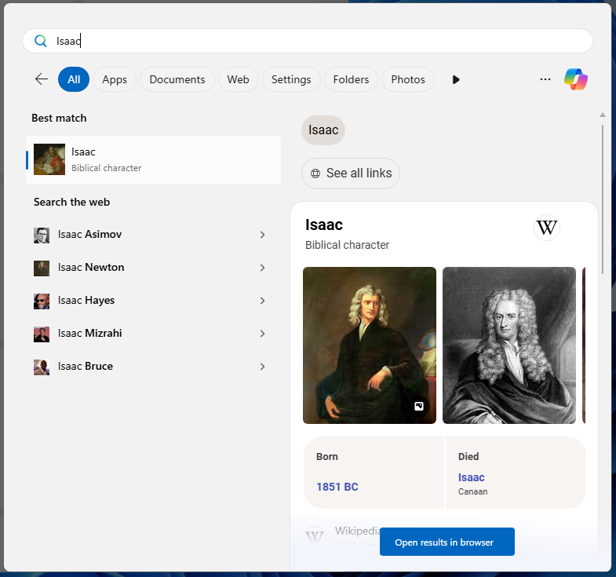
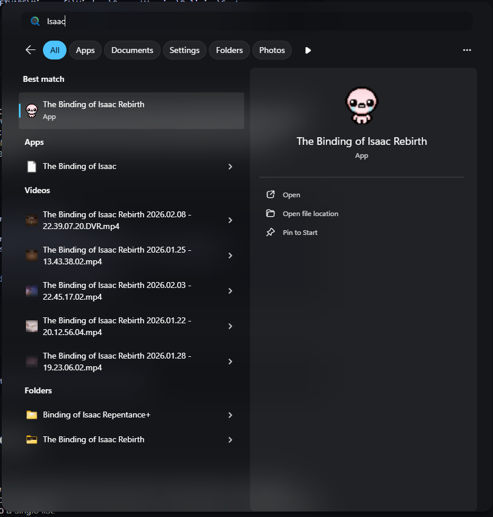
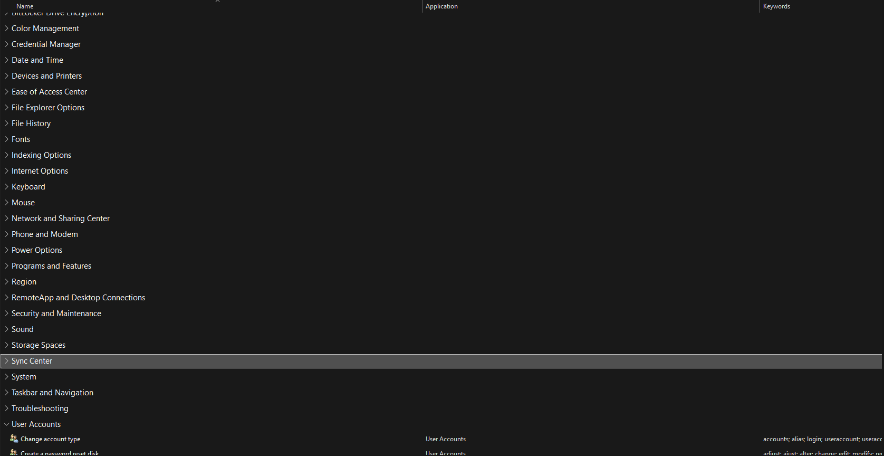
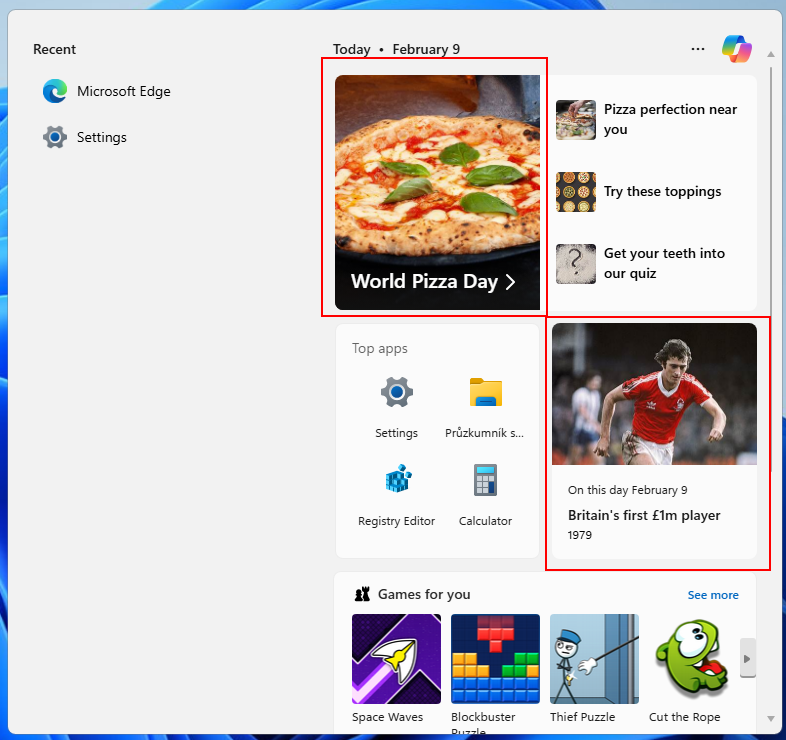
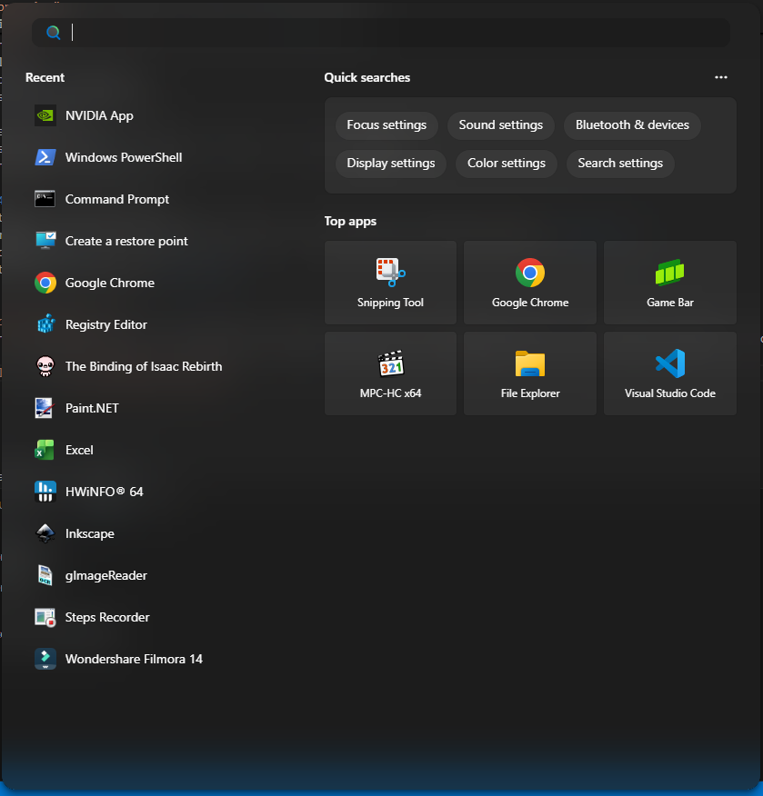
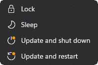
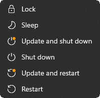
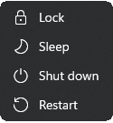

Scripts
What each script does, the code behind it and the registry keys it changes. Create a restore point before you run anything.
rexplorer.bat
A batch file that restarts explorer.exe, because sometimes restarting explorer is necessary to apply tweaks.
Script
taskkill /im explorer.exe /f
start explorer.exe
exitStartAds.py
Removes advertisements in the start menu.
Script
path = r"Software\Microsoft\Windows\CurrentVersion\ContentDeliveryManager"
key = winreg.OpenKey(winreg.HKEY_CURRENT_USER, path, 0, winreg.KEY_SET_VALUE)
# Removing Start menu ads
winreg.SetValueEx(key, "SystemPaneSuggestionsEnabled", 0, winreg.REG_DWORD, 0)
# Reverting (bringing the ads back)
winreg.SetValueEx(key, "SystemPaneSuggestionsEnabled", 0, winreg.REG_DWORD, 1)Affected paths
regeditComputer\HKEY_CURRENT_USER\Software\Microsoft\Windows\CurrentVersion\ContentDeliveryManagerEndTask.py
Enables the End Task option when right-clicking an app on the Windows 11 taskbar.
The script works by toggling an undocumented registry flag used internally
by Windows Explorer.
Script
path = r"Software\Microsoft\Windows\CurrentVersion\Explorer\Advanced\TaskbarDeveloperSettings"
# Applying
key = winreg.CreateKey(winreg.HKEY_CURRENT_USER, path)
winreg.SetValueEx(key, "TaskbarEndTask", 0, winreg.REG_DWORD, 1)
winreg.CloseKey(key)
# Reverting
key = winreg.OpenKey(winreg.HKEY_CURRENT_USER, path, 0, winreg.KEY_SET_VALUE)
winreg.DeleteValue(key, "TaskbarEndTask")
winreg.CloseKey(key)Affected paths
regeditComputer\HKEY_CURRENT_USER\Software\Microsoft\Windows\CurrentVersion\Explorer\Advanced\TaskbarDeveloperSettingsLocalAccount.py
A Python script to create a new local user account.
You can choose to make the user an administrator or a standard account.
Script
# Creating the account
subprocess.run(["net", "user", username, password, "/add"], check=True)
# Adding it to Administrators (optional)
subprocess.run(["net", "localgroup", "Administrators", username, "/add"], check=True)DropFileRemove.py
In a recent update, Microsoft added a new "file sharing" option. If you drag a file, an intrusive pop-up window appears asking if you want to share it to other devices. This script removes that pop-up.
Script
path = r"SYSTEM\ControlSet001\Control\FeatureManagement\Overrides\14\3895955085"
# Applying
key = winreg.CreateKey(winreg.HKEY_LOCAL_MACHINE, path)
winreg.SetValueEx(key, "EnabledState", 0, winreg.REG_DWORD, 1)
winreg.SetValueEx(key, "EnabledStateOptions", 0, winreg.REG_DWORD, 0)
winreg.CloseKey(key)
# Reverting
key = winreg.OpenKey(winreg.HKEY_LOCAL_MACHINE, path, 0, winreg.KEY_SET_VALUE)
winreg.DeleteValue(key, "EnabledState")
winreg.DeleteValue(key, "EnabledStateOptions")
winreg.CloseKey(key)Affected paths
regeditComputer\HKEY_LOCAL_MACHINE\SYSTEM\ControlSet001\Control\FeatureManagement\Overrides\14\3895955085PowerPlan.py
A Windows power plan manager.
You can create a custom power plan based on existing presets, some of which are normally not accessible to regular users.
Power plan presets
- Power Saving
- Balanced
- High Performance
- Ultimate Performance
Script
# Copy a preset, then rename the copy and make it active
os.system("powercfg -duplicatescheme " + base_plan)
output = os.popen("powercfg -list").read().splitlines()
new = ""
for line in output:
if base_name in line:
new = line.split(":")[1].split("(")[0].strip()
if new != "":
os.system('powercfg -changename ' + new + ' "' + name + '"')
os.system("powercfg -setactive " + new)Affected paths
The script does not use the Windows registry, instead it uses powercfg (a command-line tool).
DeviceSetupRegion.py
DeviceSetupRegion.py changes the Windows device setup region and current location.
Because Windows blocks certain features (ex. Disabling Bing search in the start menu) in certain countries, and usually checks the "Device Setup Region" value, which you cannot change, instead of the current location. All restrictions are documented in: C:\Windows\System32\IntegratedServicesRegionPolicySet.json
Script
# Current location
key = winreg.OpenKey(winreg.HKEY_CURRENT_USER, r"Control Panel\International\Geo", 0, winreg.KEY_SET_VALUE)
winreg.SetValueEx(key, "Name", 0, winreg.REG_SZ, abbrev)
winreg.SetValueEx(key, "Nation", 0, winreg.REG_SZ, str(nation_id))
winreg.CloseKey(key)
# Device setup region
key2 = winreg.OpenKey(
winreg.HKEY_LOCAL_MACHINE,
r"SOFTWARE\Microsoft\Windows\CurrentVersion\Control Panel\DeviceRegion",
0,
winreg.KEY_SET_VALUE)
winreg.DeleteValue(key2, "DeviceRegion")
winreg.CloseKey(key2)Affected paths
regeditComputer\HKEY_LOCAL_MACHINE\SOFTWARE\Microsoft\Windows\CurrentVersion\Control Panel\DeviceRegion
Computer\HKEY_CURRENT_USER\Control Panel\International\GeoDisableAdvertisementID.py
Disables most Advertisement ID settings scattered throughout the privacy options.
Reduces most telemetry and data collection.
Script
# Applying
# Advertising ID
key = winreg.CreateKey(winreg.HKEY_CURRENT_USER, r"Software\Microsoft\Windows\CurrentVersion\AdvertisingInfo")
winreg.SetValueEx(key, "Enabled", 0, winreg.REG_DWORD, 0)
winreg.CloseKey(key)
# Tailored experiences (formerly personalized offers)
key = winreg.CreateKey(winreg.HKEY_CURRENT_USER, r"Software\Microsoft\Windows\CurrentVersion\Privacy")
winreg.SetValueEx(key, "TailoredExperiencesWithDiagnosticDataEnabled", 0, winreg.REG_DWORD, 0)
winreg.CloseKey(key)
# Ad personalization
key = winreg.CreateKey(winreg.HKEY_CURRENT_USER, r"Software\Microsoft\Windows\CurrentVersion\ContentDeliveryManager")
winreg.SetValueEx(key, "SubscribedContent-338393Enabled", 0, winreg.REG_DWORD, 0)
winreg.SetValueEx(key, "SubscribedContent-353694Enabled", 0, winreg.REG_DWORD, 0)
winreg.CloseKey(key)
# Telemetry
key = winreg.CreateKey(winreg.HKEY_LOCAL_MACHINE, r"Software\Policies\Microsoft\Windows\DataCollection")
winreg.SetValueEx(key, "AllowTelemetry", 0, winreg.REG_DWORD, 0)
winreg.CloseKey(key)
# Reverting: the same keys, with the values set back
# Enabled = 1
# TailoredExperiencesWithDiagnosticDataEnabled = 1
# SubscribedContent-338393Enabled = 1, SubscribedContent-353694Enabled = 1
# AllowTelemetry = 3Affected paths
regeditComputer\HKEY_CURRENT_USER\Software\Microsoft\Windows\CurrentVersion\AdvertisingInfo
Computer\HKEY_CURRENT_USER\Software\Microsoft\Windows\CurrentVersion\Privacy
Computer\HKEY_CURRENT_USER\Software\Microsoft\Windows\CurrentVersion\ContentDeliveryManager
Computer\HKEY_LOCAL_MACHINE\Software\Policies\Microsoft\Windows\DataCollectionDetailedShutdown.py
When shutting down your computer, Windows normally shows “Shutting down” without any details.
By enabling this tweak, you can see detailed information about what the system is actually doing during the shutdown process, including any processes or tasks that might be preventing the shutdown.
Script
path = r"SOFTWARE\Microsoft\Windows\CurrentVersion\Policies\System"
key = winreg.CreateKey(winreg.HKEY_LOCAL_MACHINE, path)
# Applying
winreg.SetValueEx(key, "VerboseStatus", 0, winreg.REG_DWORD, 1)
# Reverting
winreg.DeleteValue(key, "VerboseStatus")
winreg.CloseKey(key)Affected paths
regeditComputer\HKEY_LOCAL_MACHINE\SOFTWARE\Microsoft\Windows\CurrentVersion\Policies\SystemLocalSearch.py
Prevents Windows Search from showing online results. Most of the time, when using the Start menu, you are searching for something on your PC. Without this tweak, muscle memory and pressing enter without double checking after a search causes Microsoft Bing to open with search results for what you typed, instead of launching the app you actually wanted. For some reason, Microsoft prioritizes Bing over local search.
This tweak disables online search entirely.
Example
Before

After

Script
path = r"Software\Policies\Microsoft\Explorer"
key = winreg.CreateKey(winreg.HKEY_CURRENT_USER, path)
# Applying
winreg.SetValueEx(key, "DisableSearchBoxSuggestions", 0, winreg.REG_DWORD, 1)
# Reverting
winreg.DeleteValue(key, "DisableSearchBoxSuggestions")
winreg.CloseKey(key)Affected paths
regeditComputer\HKEY_CURRENT_USER\Software\Policies\Microsoft\ExplorerControlPanelGodMode.bat
Windows “GodMode” is a hidden feature in Windows that creates a folder which exposes all control panel options and other administrative tools in one place. Windows settings are usually spread across different menus and apps, GodMode sorts them into a single list.
Preview

Script
for /f "tokens=2*" %%A in ('reg query "HKCU\Software\Microsoft\Windows\CurrentVersion\Explorer\User Shell Folders" /v Desktop') do set desktop=%%B
call set desktop=%desktop%
powershell -Command "New-Item -Path '%desktop%\GodMode.{ED7BA470-8E54-465E-825C-99712043E01C}' -ItemType Directory -Force"
Affected paths
%USERPROFILE%\Desktop (C:\Users\YOURNAME\Desktop)RestorePoint.py
A restore point in Windows is like a checkpoint in a game. It saves your important system files, programs, drivers, and registry settings. If something goes wrong, a restore point lets you roll your computer back to a previous, working state. Think of it as an undo button for your whole system. Keep in mind that even one of these scripts could potentially cause issues.
Microsoft also has a habit of moving or renaming directories in updates, which can break things unrelated to this project.
Script
Python
# Calling PowerShell as admin to create a new restore point
script_dir = Path(__file__).resolve().parent
powershell_script = script_dir / "restorepointhelper.ps1"
subprocess.run([
"powershell",
"-ExecutionPolicy", "Bypass",
"-File", str(powershell_script),
])
# Removing all restore points
command = ["vssadmin", "delete", "shadows", "/for=c:", "/all", "/quiet"]
subprocess.run(command, check=True)PowerShell
# Creating a new restore point
Checkpoint-Computer -Description "KASPAR Restore Point" -RestorePointType "MODIFY_SETTINGS"Affected paths
C:\System Volume InformationDisableDynamicSearch.py
Dynamic Search is basically, again, turning the Windows search bar into something that isn't searching on Windows. It shows you news you did not ask for, what "Day" it is, which is cool and all, but not in my search bar.
Example
Before

After

Script
path = r"Software\Microsoft\Windows\CurrentVersion\SearchSettings"
reg_key = winreg.OpenKey(winreg.HKEY_CURRENT_USER, path, 0, winreg.KEY_SET_VALUE)
# Applying
winreg.SetValueEx(reg_key, value_name, 0, winreg.REG_DWORD, 0)
# Reverting
winreg.SetValueEx(reg_key, value_name, 0, winreg.REG_DWORD, 1)Affected paths
regeditComputer\HKEY_CURRENT_USER\Software\Microsoft\Windows\CurrentVersion\SearchSettingsShutdownAndDontUpdate.py
Brings back the "Shutdown and Restart" options in the start menu, even if there's an update pending. Also allows you to disable the update option entirely.
Example
Forced update (original behavior)

Both options (Recommended)

No update options

Script
path = r"SOFTWARE\Microsoft\WindowsUpdate\Orchestrator"
key = winreg.OpenKey(winreg.HKEY_LOCAL_MACHINE, path, 0, winreg.KEY_SET_VALUE | winreg.KEY_WOW64_64KEY)
# Shut down and Restart, plus both update options (recommended)
winreg.SetValueEx(key, "ShutdownFlyoutOptions", 0, winreg.REG_DWORD, 0xF)
# Forced updates (original behavior)
winreg.SetValueEx(key, "ShutdownFlyoutOptions", 0, winreg.REG_DWORD, 0xA)
# No update options at all
winreg.SetValueEx(key, "ShutdownFlyoutOptions", 0, winreg.REG_DWORD, 0x0)
winreg.CloseKey(key)Affected paths
regeditComputer\HKEY_LOCAL_MACHINE\SOFTWARE\Microsoft\WindowsUpdate\OrchestratorLocalAccountDuringInstallation / KasparNRO
This script allows you to install Windows without needing an internet connection.
Made with love to make the installation process faster and less painful.
It creates a local account during setup for you.
Your name will be set to KASPAR.
How to use
Go through the installation process normally. Stop at the first setup screen after the reboot (OOBE), the one that asks "Is this the right country or region?", and then:
- Press Shift + F10. A Command Prompt window will pop up.
- Type this and confirm with Enter:
curl -L tinyurl.com/kasparnro -o local.cmd - When the download finishes (usually a second or two), run it:
local.cmd - Your computer restarts automatically. Once Windows boots up again, answer the region questions. The local account will already be created for you.
Changing the local account name
After installation, you can change the local account’s display name:
- Press Win + R
- Type:
netplwiz - Select your local account → Properties → rename it
How it works
- CURL = transfers/downloads data from a server, where the script is hosted (GitHub, shortened via TinyURL).
- -L is a flag that tells CURL to follow redirects, which is needed because TinyURL redirects to raw.githubusercontent.com.
tinyurl.com/kasparnro→https://raw.githubusercontent.com/tomandesMSH/KASPAR/main/scripts/LocalAccountDuringInstallation/script.cmd
(NRO/BypassNRO was a command that did the same, but Microsoft abandoned it in March 2025.)- -o local.cmd tells CURL to save the downloaded file as "local.cmd". You can change the name if you want.
local.cmdruns the cmd file you just downloaded.
AskCopilotDisable.py
Disables the "Ask Copilot" option in the right click menu.
Script
path = r"Software\Microsoft\Windows\CurrentVersion\Shell Extensions\Blocked"
key = winreg.CreateKey(winreg.HKEY_CURRENT_USER, path)
# Applying
winreg.SetValueEx(key, "{CB3B0003-8088-4EDE-8769-8B354AB2FF8C}", 0, winreg.REG_SZ, "")
winreg.SetValueEx(key, "{241F3F77-3B9E-4C64-8E2E-1A7C62C2F1AE}", 0, winreg.REG_SZ, "")
# Reverting
winreg.DeleteValue(key, "{CB3B0003-8088-4EDE-8769-8B354AB2FF8C}")
winreg.DeleteValue(key, "{241F3F77-3B9E-4C64-8E2E-1A7C62C2F1AE}")
winreg.CloseKey(key)MicVolume.py
Windows has a habit of quietly lowering or muting your microphone, usually after a driver update or when a new audio device gets plugged in. This script forces the microphone back to 100% volume and makes sure it isn't muted.
Requirements: unlike the other scripts, this one needs two third-party
packages. Install them first: pip install pycaw comtypes
Script
mic = AudioUtilities.GetMicrophone()
interface = mic.Activate(IAudioEndpointVolume._iid_, CLSCTX_ALL, None)
volume = cast(interface, POINTER(IAudioEndpointVolume))
# Applying: full volume, unmuted
volume.SetMasterVolumeLevelScalar(1.0, None)
volume.SetMute(0, None)
# Reverting
volume.SetMasterVolumeLevelScalar(0.0, None)
volume.SetMute(0, None)Affected paths
The script does not touch the Windows registry, instead it uses the Core Audio API through the
pycaw library.